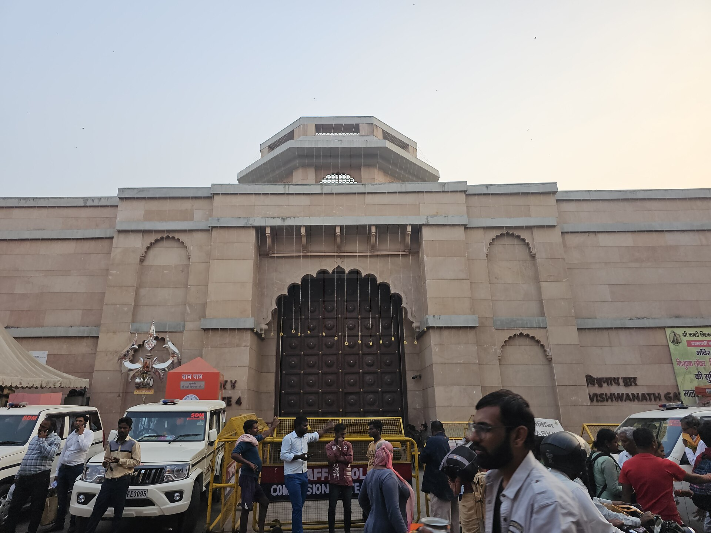

భారతదేశ ఆధ్యాత్మిక హృదయంగా, సకల తీర్థాల సారాంశంగా వెలుగొందుతున్న జగత్ ప్రసిద్ధ పుణ్యక్షేత్రం శ్రీ కాశీ విశ్వనాథ దేవాలయం.
ఈ దివ్యధామం ఉత్తరప్రదేశ్ రాష్ట్రంలోని ప్రాచీన వారణాసి (బనారస్) నగరంలో, పవిత్ర గంగానది ఉత్తరవాహినిగా ప్రవహించే పశ్చిమ ఒడ్డున వెలసి ఉంది. ద్వాదశ జ్యోతిర్లింగాలలో ఈ క్షేత్రం అత్యున్నత శిఖరంగా పూజలందుకుంటోంది.
‘కాశీ’ అనగా జ్ఞాన ప్రకాశాన్ని ప్రసాదించే దివ్య క్షేత్రం. ‘విశ్వనాథుడు’ అనగా అఖిలాండ కోటి బ్రహ్మాండాలకు అధిపతి అయిన పరమేశ్వరుడు. కాశీలో విశ్వనాథుని దర్శనం సర్వ పాపాలను హరించి, పునర్జన్మ లేని శాశ్వత మోక్ష సామ్రాజ్యాన్ని అనుగ్రహిస్తుందని సనాతన సంప్రదాయం చాటిచెబుతోంది.
శ్రీ కాశీ విశ్వనాథ జ్యోతిర్లింగ క్షేత్రం
ద్వాదశ జ్యోతిర్లింగ రాజం & అవిముక్త ముక్తిధామం • వారణాసి, ఉత్తరప్రదేశ్

౧. పరిచయం
౨. క్షేత్ర పురాణ గాథ — అవిముక్త క్షేత్రం & తారక మంత్ర మోక్షం
స్కంద పురాణంలోని కాశీ ఖండం మరియు శివ పురాణ కోటిరుద్ర సంహిత ప్రకారం, కాశీ భూలోకానికి చెందిన నగరం మాత్రమే కాదు; అది పరమేశ్వరుని త్రిశూలాగ్రంపై నిలిచిన దివ్య క్షేత్రం.
• అవిముక్త క్షేత్రం: మహా ప్రళయం సంభవించి సమస్త సృష్టి జలమయమైనా, పరమశివుడు ఈ క్షేత్రాన్ని ఎన్నడూ విడిచిపెట్టడు (అవిముక్తం). ప్రళయ కాలంలో శంకరుడు కాశీ క్షేత్రాన్ని తన త్రిశూలం కొనపైకి ఎత్తి రక్షిస్తాడని పురాణాలు చెబుతాయి.
• జ్యోతిఃస్తంభ ప్రాదుర్భావం: సృష్టి ఆదిలో బ్రహ్మ, విష్ణువుల నడుమ ఎవరు అధికుడనే సంశయం తలెత్తినప్పుడు, వారి అహంకారాన్ని నివారించడానికి పరమశివుడు ఆద్యంతాలు లేని అనంత మహా జ్యోతిర్లింగ స్తంభంగా ఆవిర్భవించిన మహత్తర మూలస్థానం కాశీ క్షేత్రమే.
• కాశ్యాం తు మరణాన్ముక్తిః: సనాతన ధర్మంలో కాశీలో దేహత్యాగం చేయడం పరమోన్నత పుణ్యఫలంగా భావిస్తారు. కాశీ క్షేత్రంలో ప్రాణం విడిచే ప్రతి జీవికి మరణ సమయంలో సాక్షాత్తు పరమశివుడే కుడిచెవిలో పరమ పవిత్రమైన శ్రీరామ తారక మంత్రాన్ని ఉపదేశించి జనన మరణ చక్రం నుండి విముక్తి (మోక్షం) ప్రసాదిస్తాడని విశ్వాసం.
• అవిముక్త క్షేత్రం: మహా ప్రళయం సంభవించి సమస్త సృష్టి జలమయమైనా, పరమశివుడు ఈ క్షేత్రాన్ని ఎన్నడూ విడిచిపెట్టడు (అవిముక్తం). ప్రళయ కాలంలో శంకరుడు కాశీ క్షేత్రాన్ని తన త్రిశూలం కొనపైకి ఎత్తి రక్షిస్తాడని పురాణాలు చెబుతాయి.
• జ్యోతిఃస్తంభ ప్రాదుర్భావం: సృష్టి ఆదిలో బ్రహ్మ, విష్ణువుల నడుమ ఎవరు అధికుడనే సంశయం తలెత్తినప్పుడు, వారి అహంకారాన్ని నివారించడానికి పరమశివుడు ఆద్యంతాలు లేని అనంత మహా జ్యోతిర్లింగ స్తంభంగా ఆవిర్భవించిన మహత్తర మూలస్థానం కాశీ క్షేత్రమే.
• కాశ్యాం తు మరణాన్ముక్తిః: సనాతన ధర్మంలో కాశీలో దేహత్యాగం చేయడం పరమోన్నత పుణ్యఫలంగా భావిస్తారు. కాశీ క్షేత్రంలో ప్రాణం విడిచే ప్రతి జీవికి మరణ సమయంలో సాక్షాత్తు పరమశివుడే కుడిచెవిలో పరమ పవిత్రమైన శ్రీరామ తారక మంత్రాన్ని ఉపదేశించి జనన మరణ చక్రం నుండి విముక్తి (మోక్షం) ప్రసాదిస్తాడని విశ్వాసం.
౩. చారిత్రక నేపథ్యం — ధ్వంసాలు & పునరుజ్జీవనం
కాశీ విశ్వనాథ ఆలయం శతాబ్దాల తరబడి విశ్వాసానికి, భారతీయ సంస్కృతి అజేయ సంకల్పానికి సజీవ ప్రతీకగా నిలిచింది:
• ప్రాచీన ఆలయం & దండయాత్రలు: 1194లో కుతుబుద్దీన్ ఐబక్ కాలం నుండి ప్రారంభించి, 1669లో మొఘల్ చక్రవర్తి ఔరంగజేబు వరకు ఈ ఆలయం పలుమార్లు దండయాత్రలకు గురైంది. ఔరంగజేబు ఆలయాన్ని కూల్చివేసి దాని పునాదులపై జ్ఞానవాపి మసీదును నిర్మించాడు. ఆ సమయంలో ఆలయ ప్రధాన అర్చకుడు స్వయంభూ జ్యోతిర్లింగాన్ని రక్షించడానికి లింగంతో సహా ఆలయ ప్రాంగణంలోని జ్ఞానవాపి పవిత్ర బావి (కూపం) లోకి దూకి కాపాడినట్లు చరిత్ర చెబుతుంది.
• అహల్యాబాయి హోల్కర్ పునర్నిర్మాణం (1780): మాల్వా (ఇండోర్) సామ్రాజ్య మహారాణి, పుణ్యశ్లోక రాజమాత అహల్యాబాయి హోల్కర్ అకుంఠిత దీక్షతో ప్రస్తుత కాశీ విశ్వనాథ దేవాలయాన్ని పునర్నిర్మించి శైవ భక్తికి పునరుజ్జీవనం కల్పించారు.
• మహారాజా రంజిత్ సింగ్ స్వర్ణ సమర్పణ (1835): పంజాబ్ కేసరి మహారాజా రంజిత్ సింగ్ ఆలయ ప్రధాన శిఖరాలకు దాదాపు ౧,౦౦౦ కిలోల (ఒక టన్ను) స్వచ్ఛమైన బంగారాన్ని సమర్పించారు. దీంతో ఈ ఆలయం ప్రపంచవ్యాప్తంగా 'గోల్డెన్ టెంపుల్ ఆఫ్ శివ'గా ప్రసిద్ధి చెందింది.
• శ్రీ కాశీ విశ్వనాథ్ ధామ్ కారిడార్ (2021): ఆలయాన్ని గంగానది లలితా ఘాట్తో నేరుగా అనుసంధానిస్తూ సుమారు 50,000 చదరపు మీటర్ల విస్తీర్ణంలో అత్యాధునిక సౌకర్యాలతో మహా కారిడార్ నిర్మించబడింది. భక్తులు గంగానదిలో స్నానం చేసి నేరుగా గంగాజలంతో కాలినడకన వచ్చి విశ్వనాథునికి అభిషేకం చేసుకునే అద్భుత ఆధ్యాత్మిక మార్గం ఏర్పడింది.
• ప్రాచీన ఆలయం & దండయాత్రలు: 1194లో కుతుబుద్దీన్ ఐబక్ కాలం నుండి ప్రారంభించి, 1669లో మొఘల్ చక్రవర్తి ఔరంగజేబు వరకు ఈ ఆలయం పలుమార్లు దండయాత్రలకు గురైంది. ఔరంగజేబు ఆలయాన్ని కూల్చివేసి దాని పునాదులపై జ్ఞానవాపి మసీదును నిర్మించాడు. ఆ సమయంలో ఆలయ ప్రధాన అర్చకుడు స్వయంభూ జ్యోతిర్లింగాన్ని రక్షించడానికి లింగంతో సహా ఆలయ ప్రాంగణంలోని జ్ఞానవాపి పవిత్ర బావి (కూపం) లోకి దూకి కాపాడినట్లు చరిత్ర చెబుతుంది.
• అహల్యాబాయి హోల్కర్ పునర్నిర్మాణం (1780): మాల్వా (ఇండోర్) సామ్రాజ్య మహారాణి, పుణ్యశ్లోక రాజమాత అహల్యాబాయి హోల్కర్ అకుంఠిత దీక్షతో ప్రస్తుత కాశీ విశ్వనాథ దేవాలయాన్ని పునర్నిర్మించి శైవ భక్తికి పునరుజ్జీవనం కల్పించారు.
• మహారాజా రంజిత్ సింగ్ స్వర్ణ సమర్పణ (1835): పంజాబ్ కేసరి మహారాజా రంజిత్ సింగ్ ఆలయ ప్రధాన శిఖరాలకు దాదాపు ౧,౦౦౦ కిలోల (ఒక టన్ను) స్వచ్ఛమైన బంగారాన్ని సమర్పించారు. దీంతో ఈ ఆలయం ప్రపంచవ్యాప్తంగా 'గోల్డెన్ టెంపుల్ ఆఫ్ శివ'గా ప్రసిద్ధి చెందింది.
• శ్రీ కాశీ విశ్వనాథ్ ధామ్ కారిడార్ (2021): ఆలయాన్ని గంగానది లలితా ఘాట్తో నేరుగా అనుసంధానిస్తూ సుమారు 50,000 చదరపు మీటర్ల విస్తీర్ణంలో అత్యాధునిక సౌకర్యాలతో మహా కారిడార్ నిర్మించబడింది. భక్తులు గంగానదిలో స్నానం చేసి నేరుగా గంగాజలంతో కాలినడకన వచ్చి విశ్వనాథునికి అభిషేకం చేసుకునే అద్భుత ఆధ్యాత్మిక మార్గం ఏర్పడింది.
౪. ఆలయ విశిష్టతలు & స్వర్ణ శిఖరం
• స్వయంభూ జ్యోతిర్లింగం: గర్భగుడిలో వెండి పీఠం (ఆవుడైయార్) మధ్యలో ముదురు గోధుమ-నలుపు రంగులో స్వయంభువుగా వెలసిన విశ్వేశ్వర లింగం దర్శనమిస్తుంది. నిరంతరం వేద మంత్రోచ్ఛారణల నడుమ గంగాజలం, బిల్వపత్రాలు, భస్మంతో అభిషేకాలు జరుగుతాయి.
• 15.5 మీటర్ల బంగారు శిఖరం: ఆలయ గోపురంపై ఉన్న బంగారు శిఖరం, దానిపై ప్రతిష్ఠించిన స్వర్ణ త్రిశూలం, సువర్ణ ఛత్రం సూర్యకాంతిలో దేదీప్యమానంగా ప్రకాశిస్తూ భక్తులకు దివ్య దర్శనాన్నిస్తాయి.
• జ్ఞానవాపి కూపం: ఆలయ ప్రాంగణంలోనే స్వయంభూ లింగాన్ని దాచిన ప్రాచీన 'జ్ఞానవాపి' తీర్థ బావి ఉంది.
• 15.5 మీటర్ల బంగారు శిఖరం: ఆలయ గోపురంపై ఉన్న బంగారు శిఖరం, దానిపై ప్రతిష్ఠించిన స్వర్ణ త్రిశూలం, సువర్ణ ఛత్రం సూర్యకాంతిలో దేదీప్యమానంగా ప్రకాశిస్తూ భక్తులకు దివ్య దర్శనాన్నిస్తాయి.
• జ్ఞానవాపి కూపం: ఆలయ ప్రాంగణంలోనే స్వయంభూ లింగాన్ని దాచిన ప్రాచీన 'జ్ఞానవాపి' తీర్థ బావి ఉంది.
౫. అనుబంధ ముఖ్య ఆలయాలు & పంచ తీర్థాలు
కాశీ యాత్ర సంపూర్ణం కావాలంటే విశ్వనాథునితో పాటు క్రింది క్షేత్రాలను తప్పక దర్శించాలి:
• శ్రీ అన్నపూర్ణా దేవి ఆలయం: విశ్వేశ్వరుని సమేత అన్నపూర్ణా అమ్మవారు కాశీ నగరంలో ఎవరినీ ఆకలితో పస్తులుండనీయదని ప్రతీతి. సాక్షాత్తు పరమశివుడే భిక్షాపాత్ర పట్టుకుని అమ్మవారి వద్ద లోక రక్షణార్థం భిక్ష స్వీకరించిన స్థలం ఇది.
• శ్రీ కాలభైరవ ఆలయం (కాశీ కొత్వాల్): కాశీ క్షేత్ర రక్షకుడైన కాలభైరవుని దర్శించుకుని, భైరవ రక్షారేకు (నల్లటి దారం) కట్టుకున్నప్పుడే కాశీ యాత్రా ఫలం దక్కుతుంది.
• సాక్షి గణపతి మందిరం: కాశీకి వచ్చిన ప్రతి యాత్రికుడి దర్శనాన్ని లిఖించి, యమధర్మరాజు వద్ద భక్తునికి సాక్ష్యంగా నిలిచే వినాయకుడు.
• విశాలాక్షి శక్తిపీఠం: సతీదేవి కర్ణాభరణాలు (కుండలాలు) పడిన పవిత్ర అష్టాదశ శక్తిపీఠాలలో ఒకటి.
• పవిత్ర పంచ తీర్థాలు & ఘాట్లు: అస్సీ ఘాట్, దశాశ్వమేధ ఘాట్ (ప్రపంచ ప్రసిద్ధ మహా గంగా హారతి), మణికర్ణిక ఘాట్ (మహా శ్మశానం / ముక్తి ధామం), పంచగంగా ఘాట్, మరియు వరుణా సంగమ ఘాట్.
• శ్రీ అన్నపూర్ణా దేవి ఆలయం: విశ్వేశ్వరుని సమేత అన్నపూర్ణా అమ్మవారు కాశీ నగరంలో ఎవరినీ ఆకలితో పస్తులుండనీయదని ప్రతీతి. సాక్షాత్తు పరమశివుడే భిక్షాపాత్ర పట్టుకుని అమ్మవారి వద్ద లోక రక్షణార్థం భిక్ష స్వీకరించిన స్థలం ఇది.
• శ్రీ కాలభైరవ ఆలయం (కాశీ కొత్వాల్): కాశీ క్షేత్ర రక్షకుడైన కాలభైరవుని దర్శించుకుని, భైరవ రక్షారేకు (నల్లటి దారం) కట్టుకున్నప్పుడే కాశీ యాత్రా ఫలం దక్కుతుంది.
• సాక్షి గణపతి మందిరం: కాశీకి వచ్చిన ప్రతి యాత్రికుడి దర్శనాన్ని లిఖించి, యమధర్మరాజు వద్ద భక్తునికి సాక్ష్యంగా నిలిచే వినాయకుడు.
• విశాలాక్షి శక్తిపీఠం: సతీదేవి కర్ణాభరణాలు (కుండలాలు) పడిన పవిత్ర అష్టాదశ శక్తిపీఠాలలో ఒకటి.
• పవిత్ర పంచ తీర్థాలు & ఘాట్లు: అస్సీ ఘాట్, దశాశ్వమేధ ఘాట్ (ప్రపంచ ప్రసిద్ధ మహా గంగా హారతి), మణికర్ణిక ఘాట్ (మహా శ్మశానం / ముక్తి ధామం), పంచగంగా ఘాట్, మరియు వరుణా సంగమ ఘాట్.
౬. నిత్య పూజా విశేషాలు & పంచకాల హారతులు
కాశీ విశ్వనాథునికి ప్రతిరోజూ ఐదు విశిష్ట హారతులు అద్భుత వైదిక సంప్రదాయంలో జరుగుతాయి:
౧. మంగళ హారతి (ఉదయం 3:00 – 4:00): ఆలయం తెరిచే సమయంలో జరిగే ప్రప్రథమ పరమ పావన పూజ.
౨. మధ్యాహ్న భోగ హారతి (మధ్యాహ్నం 11:15 – 12:20): స్వామివారికి మహానివేదన సమర్పించే పూజ.
౩. సప్తర్షి హారతి (సాయంత్రం 7:00 – 8:15): సప్తర్షుల ప్రతినిధులుగా ఏడుగురు వేద పండితులు ఏకకాలంలో వేద ఘోషతో నిర్వహించే అద్భుతమైన హారతి.
౪. శృంగార / రాత్రి హారతి (రాత్రి 9:00 – 10:15): స్వామివారికి రకరకాల పూలమాలలు, అలంకారాలతో జరిగే నైవేద్య సేవ.
౫. శయన హారతి (రాత్రి 10:30 – 11:00): ఏకాంత సేవ అనంతరం శయన మందిరంలోకి స్వామిని ఆహ్వానించే పూజ.
• రంగభరి ఏకాదశి: ఫాల్గుణ శుక్ల ఏకాదశి నాడు పార్వతీ సమేత విశ్వనాథుని వివాహానంతర కాశీ ప్రవేశోత్సవం మరియు గులాల్ (రంగుల) వేడుక ఘనంగా జరుగుతుంది.
• మహాశివరాత్రి & దేవ దీపావళి: కార్తీక పూర్ణిమ నాడు జరిగే 'దేవ దీపావళి' రోజున గంగా తీరంలోని అన్ని ఘాట్లు లక్షలాది ప్రమిదల వెలుగులతో భూలోక వైకుంఠంలా మెరిసిపోతాయి.
౧. మంగళ హారతి (ఉదయం 3:00 – 4:00): ఆలయం తెరిచే సమయంలో జరిగే ప్రప్రథమ పరమ పావన పూజ.
౨. మధ్యాహ్న భోగ హారతి (మధ్యాహ్నం 11:15 – 12:20): స్వామివారికి మహానివేదన సమర్పించే పూజ.
౩. సప్తర్షి హారతి (సాయంత్రం 7:00 – 8:15): సప్తర్షుల ప్రతినిధులుగా ఏడుగురు వేద పండితులు ఏకకాలంలో వేద ఘోషతో నిర్వహించే అద్భుతమైన హారతి.
౪. శృంగార / రాత్రి హారతి (రాత్రి 9:00 – 10:15): స్వామివారికి రకరకాల పూలమాలలు, అలంకారాలతో జరిగే నైవేద్య సేవ.
౫. శయన హారతి (రాత్రి 10:30 – 11:00): ఏకాంత సేవ అనంతరం శయన మందిరంలోకి స్వామిని ఆహ్వానించే పూజ.
• రంగభరి ఏకాదశి: ఫాల్గుణ శుక్ల ఏకాదశి నాడు పార్వతీ సమేత విశ్వనాథుని వివాహానంతర కాశీ ప్రవేశోత్సవం మరియు గులాల్ (రంగుల) వేడుక ఘనంగా జరుగుతుంది.
• మహాశివరాత్రి & దేవ దీపావళి: కార్తీక పూర్ణిమ నాడు జరిగే 'దేవ దీపావళి' రోజున గంగా తీరంలోని అన్ని ఘాట్లు లక్షలాది ప్రమిదల వెలుగులతో భూలోక వైకుంఠంలా మెరిసిపోతాయి.
౭. కాశీ — రామేశ్వర యాత్రా అనుసంధానం
సనాతన భారతీయ ధర్మంలో కాశీ యాత్ర మరియు రామేశ్వర యాత్ర ఒకదానితో ఒకటి అనుసంధానమై ఉన్నాయి:
కాశీ లేదా ప్రయాగ త్రివేణి సంగమం నుండి పవిత్ర గంగాజలాన్ని కావడి ద్వారా భక్తితో దక్షిణాన ఉన్న రామేశ్వరానికి తీసుకువెళ్లి శ్రీ రామనాథస్వామికి గంగాజలాభిషేకం చేస్తారు. అనంతరం రామేశ్వరం / ధనుష్కోడి సముద్రతీర ఇసుకను తెచ్చి ప్రయాగ త్రివేణి సంగమంలో నిమజ్జనం చేయడం సంపూర్ణ భారతీయ యాత్రా విధిగా శాస్త్రాలు పేర్కొన్నాయి.
కాశీ లేదా ప్రయాగ త్రివేణి సంగమం నుండి పవిత్ర గంగాజలాన్ని కావడి ద్వారా భక్తితో దక్షిణాన ఉన్న రామేశ్వరానికి తీసుకువెళ్లి శ్రీ రామనాథస్వామికి గంగాజలాభిషేకం చేస్తారు. అనంతరం రామేశ్వరం / ధనుష్కోడి సముద్రతీర ఇసుకను తెచ్చి ప్రయాగ త్రివేణి సంగమంలో నిమజ్జనం చేయడం సంపూర్ణ భారతీయ యాత్రా విధిగా శాస్త్రాలు పేర్కొన్నాయి.
౮. పరిసర ముఖ్య దర్శనీయ స్థలాలు
• దశాశ్వమేధ ఘాట్: ప్రతి సాయంత్రం వేలాది మంది భక్తులు, యాత్రికులు వీక్షించే అత్యద్భుత మహా గంగా హారతి ప్రదేశం.
• మణికర్ణిక ఘాట్: సతీదేవి కర్ణాభరణం పడిన పవిత్ర స్థలం మరియు కాశీలో అఖండంగా చితులు ప్రజ్వరిల్లే మహా శ్మశానం.
• సారనాథ్ (సుమారు 10 కి.మీ): గౌతమ బుద్ధుడు జ్ఞానోదయం పొందిన తర్వాత తన తొలి ధర్మచక్ర ప్రవర్తన ఉపదేశం చేసిన బౌద్ధ పవిత్ర స్థలం; ఇక్కడే అశోక స్తంభం (భారత జాతీయ చిహ్నం) ఉంది.
• సంకటమోచన హనుమాన్ ఆలయం: గోస్వామి తులసీదాస్ వారు శ్రీరామచరిత మానస్ రచించిన కాలంలో హనుమంతుని ప్రత్యక్ష దర్శనం పొంది స్థాపించిన దివ్య మందిరం.
• రామ్నగర్ కోట: గంగానది తూర్పు ఒడ్డున 18వ శతాబ్దపు కాశీ నరేశుల చారిత్రక రాజభవనం మరియు మ్యూజియం.
• మణికర్ణిక ఘాట్: సతీదేవి కర్ణాభరణం పడిన పవిత్ర స్థలం మరియు కాశీలో అఖండంగా చితులు ప్రజ్వరిల్లే మహా శ్మశానం.
• సారనాథ్ (సుమారు 10 కి.మీ): గౌతమ బుద్ధుడు జ్ఞానోదయం పొందిన తర్వాత తన తొలి ధర్మచక్ర ప్రవర్తన ఉపదేశం చేసిన బౌద్ధ పవిత్ర స్థలం; ఇక్కడే అశోక స్తంభం (భారత జాతీయ చిహ్నం) ఉంది.
• సంకటమోచన హనుమాన్ ఆలయం: గోస్వామి తులసీదాస్ వారు శ్రీరామచరిత మానస్ రచించిన కాలంలో హనుమంతుని ప్రత్యక్ష దర్శనం పొంది స్థాపించిన దివ్య మందిరం.
• రామ్నగర్ కోట: గంగానది తూర్పు ఒడ్డున 18వ శతాబ్దపు కాశీ నరేశుల చారిత్రక రాజభవనం మరియు మ్యూజియం.
౯. యాత్రికులకు సమాచారం & రవాణా మార్గాలు
భౌగోళిక స్థానం: లాహౌరి టోలా, విశ్వనాథ్ గల్లీ / కాశీ విశ్వనాథ్ ధామ్, వారణాసి, ఉత్తరప్రదేశ్ (పిన్ కోడ్: 221001).
చేరుకునే మార్గాలు:
• విమాన మార్గం: లాల్ బహదూర్ శాస్త్రి అంతర్జాతీయ విమానాశ్రయం, బాబత్పూర్ (VNS) సుమారు 25 కి.మీ దూరంలో ఉంది. హైదరాబాద్, బెంగళూరు, ఢిల్లీ, ముంబైల నుండి నిరంతరం విమానాలు ఉన్నాయి.
• రైలు మార్గం: వారణాసి జంక్షన్ (BSB), పండిట్ దీన్దయాళ్ ఉపాధ్యాయ జంక్షన్ (DDU - సుమారు 16 కి.మీ), మరియు బనారస్ (BSBS) రైల్వే స్టేషన్లు దేశంలోని అన్ని నగరాలతో నేరుగా అనుసంధానించబడి ఉన్నాయి.
• రోడ్డు మార్గం: జాతీయ రహదారులు NH 19 (గ్రాండ్ ట్రంక్ రోడ్) ద్వారా లక్నో, ప్రయాగ్రాజ్, పాట్నా, కోల్కతా వంటి నగరాల నుండి ప్రైవేట్, ఆర్టీసీ బస్సులు అందుబాటులో ఉన్నాయి.
చేరుకునే మార్గాలు:
• విమాన మార్గం: లాల్ బహదూర్ శాస్త్రి అంతర్జాతీయ విమానాశ్రయం, బాబత్పూర్ (VNS) సుమారు 25 కి.మీ దూరంలో ఉంది. హైదరాబాద్, బెంగళూరు, ఢిల్లీ, ముంబైల నుండి నిరంతరం విమానాలు ఉన్నాయి.
• రైలు మార్గం: వారణాసి జంక్షన్ (BSB), పండిట్ దీన్దయాళ్ ఉపాధ్యాయ జంక్షన్ (DDU - సుమారు 16 కి.మీ), మరియు బనారస్ (BSBS) రైల్వే స్టేషన్లు దేశంలోని అన్ని నగరాలతో నేరుగా అనుసంధానించబడి ఉన్నాయి.
• రోడ్డు మార్గం: జాతీయ రహదారులు NH 19 (గ్రాండ్ ట్రంక్ రోడ్) ద్వారా లక్నో, ప్రయాగ్రాజ్, పాట్నా, కోల్కతా వంటి నగరాల నుండి ప్రైవేట్, ఆర్టీసీ బస్సులు అందుబాటులో ఉన్నాయి.
౧౦. దర్శన వేళలు & అధికారిక సమాచారం
సాధారణ దర్శన సమయాలు: ఉదయం 4:00 నుండి రాత్రి 11:00 వరకు (హారతి సమయాలు మినహాయించి నిరంతరం దర్శనం కొనసాగుతుంది).
ఆన్లైన్ సేవలు (సుగమ దర్శనం & ఆర్తి బుకింగ్): భక్తులు అధికారిక వెబ్సైట్ ద్వారా సుగమ దర్శనం, రుద్రాభిషేకం మరియు వివిధ హారతి టిక్కెట్లను ముందస్తుగా బుక్ చేసుకోవచ్చు.
అధికారిక వెబ్సైట్లు:
• శ్రీ కాశీ విశ్వనాథ మందిర న్యాస్ అధికారిక పోర్టల్ (shrikashivishwanath.org)
• వారణాసి జిల్లా అధికారిక పర్యాటక సమాచారం
ఆన్లైన్ సేవలు (సుగమ దర్శనం & ఆర్తి బుకింగ్): భక్తులు అధికారిక వెబ్సైట్ ద్వారా సుగమ దర్శనం, రుద్రాభిషేకం మరియు వివిధ హారతి టిక్కెట్లను ముందస్తుగా బుక్ చేసుకోవచ్చు.
అధికారిక వెబ్సైట్లు:
• శ్రీ కాశీ విశ్వనాథ మందిర న్యాస్ అధికారిక పోర్టల్ (shrikashivishwanath.org)
• వారణాసి జిల్లా అధికారిక పర్యాటక సమాచారం
౧౧. ఆధార గ్రంథాలు
• స్కంద పురాణం — కాశీ ఖండం (కాశీ మాహాత్మ్యం)
• శివ పురాణం — కోటిరుద్ర సంహిత (విశ్వేశ్వర జ్యోతిర్లింగ వర్ణన)
• జగద్గురు ఆదిశంకరాచార్య ప్రణీత కాశీ పంచకం & ద్వాదశ జ్యోతిర్లింగ స్తోత్రం
• భారత పురావస్తు శాఖ (ASI) మరియు శ్రీ కాశీ విశ్వనాథ్ ధామ్ ట్రస్ట్ రికార్డులు
• శివ పురాణం — కోటిరుద్ర సంహిత (విశ్వేశ్వర జ్యోతిర్లింగ వర్ణన)
• జగద్గురు ఆదిశంకరాచార్య ప్రణీత కాశీ పంచకం & ద్వాదశ జ్యోతిర్లింగ స్తోత్రం
• భారత పురావస్తు శాఖ (ASI) మరియు శ్రీ కాశీ విశ్వనాథ్ ధామ్ ట్రస్ట్ రికార్డులు
౧౨. ముగింపు
కాశీ పుణ్యభూమిలో గంగా తరంగాల సాక్షిగా వెలసిన శ్రీ విశ్వనాథుని దర్శనం సమస్త జన్మల కర్మబంధాలను తెంపి వేసే మోక్ష ద్వారం.
పరమశివుని అనుగ్రహంతో జ్ఞాన దీప్తిని, సకల శుభాలను పొంది జీవితాన్ని సార్థకం చేసుకోవడానికి కాశీ విశ్వనాథుని దివ్య స్మరణే పరమౌషధం.
"మనోబుద్ధ్యహంకార చిత్తాని నాహం న చ శ్రోత్రజిహ్వే న చ ఘ్రాణనేత్రే |
న చ వ్యోమ భూమిర్న తేజో న వాయుః చిదానందరూపః శివోఽహం శివోఽహమ్ ||"
హర హర మహాదేవ్ • కాశీ విశ్వనాథ భగవాన్ కీ జై!
పరమశివుని అనుగ్రహంతో జ్ఞాన దీప్తిని, సకల శుభాలను పొంది జీవితాన్ని సార్థకం చేసుకోవడానికి కాశీ విశ్వనాథుని దివ్య స్మరణే పరమౌషధం.
"మనోబుద్ధ్యహంకార చిత్తాని నాహం న చ శ్రోత్రజిహ్వే న చ ఘ్రాణనేత్రే |
న చ వ్యోమ భూమిర్న తేజో న వాయుః చిదానందరూపః శివోఽహం శివోఽహమ్ ||"
హర హర మహాదేవ్ • కాశీ విశ్వనాథ భగవాన్ కీ జై!
✦ సర్వే జనాః సుఖినో భవంతు • ఓం శ్రీ కాశీ విశ్వనాథాయ నమః ✦